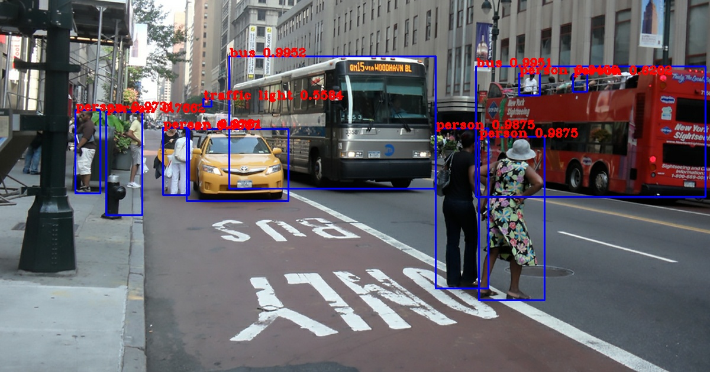

Table of Contents
- 1. Configration
- 2. Starup EC2 instances
- 3. Install docker
marcus2002/yolov3-tf2-training:$TAG - 4. Training and detection
- 5. IMPORTANT Delete stack
stakki1
1 Configration
Tag number of marcus2002/yolov3-tf2-training Docker
1
"/home/jj/stage/yolov3-tf2"
"/home/ec2-user"
1.1 Command shortcuts
aws ec2 describe-instances | jq '.[][].Instances[] | select( .State.Name == "running" ) | { dns: .PublicDnsName, ami: .ImageId, InstanceId: .InstanceId, state: .State }'
ssh -i ~/.ssh/marcus-frankfurt/marcus-franfurt.pem ubuntu@$(aws ec2 describe-instances | jq -r '.[][].Instances[0] | select( .State.Name == "running" ) | .PublicDnsName')
ssh -i ~/.ssh/marcus-frankfurt/marcus-franfurt.pem ec2-user@$(aws ec2 describe-instances | jq -r '.[][].Instances[0] | select( .State.Name == "running" ) | .PublicDnsName')
2 Starup EC2 instances
2.1 Create stack ec2.g4dn.amazon-dl.yaml
- Amazon deep learning ami on g4dn.xlarge
- With access right to list s3 bucket
- With Amanazon Linux 2 AMIn in frankfurt zone
# Do not edit. Tangled from README.org Resources: InstanceSecurityGroup: DeletionPolicy: Delete Type: AWS::EC2::SecurityGroup Properties: GroupDescription: Enable SSH access via port 22 SecurityGroupIngress: - IpProtocol: tcp FromPort: 22 ToPort: 22 CidrIp: 0.0.0.0/0 S3BucketsInstanceProfile: Type: AWS::IAM::InstanceProfile Properties: Path: "/" Roles: - Ref: S3BucketsRole ListS3BucketsPolicy: Type: AWS::IAM::Policy Properties: PolicyName: ListS3BucketsPolicy PolicyDocument: Statement: - Effect: Allow Action: - s3:List* Resource: "*" Roles: - Ref: S3BucketsRole RWS3BucketsPolicy: Type: AWS::IAM::Policy Properties: PolicyName: RWS3BucketsPolicy PolicyDocument: Statement: - Effect: Allow Action: - s3:List* - s3:Put* - s3:Get* - s3:Delete* Resource: "*" Roles: - Ref: S3BucketsRole S3BucketsRole: Type: AWS::IAM::Role Properties: AssumeRolePolicyDocument: Version: '2012-10-17' Statement: - Effect: Allow Principal: Service: - ec2.amazonaws.com Action: - sts:AssumeRole Path: "/" EC2Instance: DeletionPolicy: Delete Type: AWS::EC2::Instance Properties: # Ubuntu AMI found in console # ImageId: ami-0b7937aeb16a7eb94 # Amazon Linux AMI # ImageId: ami-0b7a46b4bd694e8a6 # Amazon AMI (amzn-ami-hvm-2018.03.0.20200318.2-x86_64-gp2 ()) ## ImageId: ami-0c5254b956817b326 ## Deep Learning AMI (Amazon Linux 2) Version 27.0 - ami-0e29cd2e136f11293 # ImageId: ami-0e29cd2e136f11293 # Deep Learning AMI (Amazon Linux 2) Version 27.0 - ImageId: ami-0e29cd2e136f11293 KeyName: marcus-franfurt InstanceType: g4dn.xlarge # BlockDeviceMappings: # - DeviceName: "/dev/xvda" # Ebs: # VolumeSize: 30 IamInstanceProfile: Ref: S3BucketsInstanceProfile SecurityGroupIds: - !Ref InstanceSecurityGroup UserData: Fn::Base64: Fn::Sub: - | #!/bin/bash -xe echo Starting "${maailma}"> /tmp/starting.txt # sudo yum update -y echo yum updated >> /tmp/starting.txt - maailma: Stack ec2.t3.amazon.docker.yaml
aws cloudformation create-stack --stack-name stakki1 --capabilities CAPABILITY_IAM --disable-rollback --template-body file://tmp/ec2.g4dn.amazon-dl.yaml
2.2 List stacks
Short list
aws cloudformation describe-stacks | jq '.[][]| { StackName: .StackName, StackStatus: .StackStatus}'
Full stack list
aws cloudformation describe-stacks
aws ec2 describe-instances
2.3 List Running instances
Short list of running ec2 instances
aws ec2 describe-instances | jq '.[][].Instances[] | select( .State.Name == "running" ) | { dns: .PublicDnsName, ami: .ImageId, InstanceId: .InstanceId, state: .State.Name, InstanceType: .InstanceType }'
2.4 Show SSH connection
Running instances
echo ssh -i ~/.ssh/marcus-frankfurt/marcus-franfurt.pem ec2-user@$(aws ec2 describe-instances | jq -r '.[][].Instances[0] | select( .State.Name == "running" ) | .PublicDnsName') echo ssh -i ~/.ssh/marcus-frankfurt/marcus-franfurt.pem ubuntu@$(aws ec2 describe-instances | jq -r '.[][].Instances[0] | select( .State.Name == "running" ) | .PublicDnsName')
ssh -i ~/.ssh/marcus-frankfurt/marcus-franfurt.pem ec2-user@$(aws ec2 describe-instances | jq -r '.[][].Instances[0] | select( .State.Name == "running" ) | .PublicDnsName') 'echo Greets from $(hostname) in $(pwd)'
2.5 Run docker marcus2002/hello:1
ssh -i ~/.ssh/marcus-frankfurt/marcus-franfurt.pem ec2-user@$(aws ec2 describe-instances | jq -r '.[][].Instances[0] | select( .State.Name == "running" ) | .PublicDnsName') sudo docker run \ --user $(id -u):$(id -g) \ --net=host \ marcus2002/hello:1
3 Install docker marcus2002/yolov3-tf2-training:$TAG
3.1 gpu-checker usage
Here just echo to allow copy-paste to terminal screen
echo nvidia-docker run marcus2002/yolov3-tf2-training:$TAG python ../gpu-checker.py || true
Here run on remote machine:
ssh -i ~/.ssh/marcus-frankfurt/marcus-franfurt.pem ec2-user@$(aws ec2 describe-instances | jq -r '.[][].Instances[0] | select( .State.Name == "running" ) | .PublicDnsName') nvidia-docker run marcus2002/yolov3-tf2-training:$TAG python ../gpu-checker.py || true
3.2 gpu-checker test
ssh -i ~/.ssh/marcus-frankfurt/marcus-franfurt.pem ec2-user@$(aws ec2 describe-instances | jq -r '.[][].Instances[0] | select( .State.Name == "running" ) | .PublicDnsName') nvidia-docker run --user $(id -u) marcus2002/yolov3-tf2-training:$TAG python ../gpu-checker.py test
3.3 gpu-cheker gpu 0 and cpu
ssh -i ~/.ssh/marcus-frankfurt/marcus-franfurt.pem ec2-user@$(aws ec2 describe-instances | jq -r '.[][].Instances[0] | select( .State.Name == "running" ) | .PublicDnsName') docker run --user $(id -u) marcus2002/yolov3-tf2-training:$TAG python ../gpu-checker.py gpu 0 ssh -i ~/.ssh/marcus-frankfurt/marcus-franfurt.pem ec2-user@$(aws ec2 describe-instances | jq -r '.[][].Instances[0] | select( .State.Name == "running" ) | .PublicDnsName') docker run --user $(id -u) marcus2002/yolov3-tf2-training:$TAG python ../gpu-checker.py cpu
4 Training and detection
4.1 Create remote data directories
ssh -i ~/.ssh/marcus-frankfurt/marcus-franfurt.pem ec2-user@$(aws ec2 describe-instances | jq -r '.[][].Instances[0] | select( .State.Name == "running" ) | .PublicDnsName') mkdir checkpoints ssh -i ~/.ssh/marcus-frankfurt/marcus-franfurt.pem ec2-user@$(aws ec2 describe-instances | jq -r '.[][].Instances[0] | select( .State.Name == "running" ) | .PublicDnsName') mkdir data ssh -i ~/.ssh/marcus-frankfurt/marcus-franfurt.pem ec2-user@$(aws ec2 describe-instances | jq -r '.[][].Instances[0] | select( .State.Name == "running" ) | .PublicDnsName') mkdir voc.meta ssh -i ~/.ssh/marcus-frankfurt/marcus-franfurt.pem ec2-user@$(aws ec2 describe-instances | jq -r '.[][].Instances[0] | select( .State.Name == "running" ) | .PublicDnsName') mkdir output ssh -i ~/.ssh/marcus-frankfurt/marcus-franfurt.pem ec2-user@$(aws ec2 describe-instances | jq -r '.[][].Instances[0] | select( .State.Name == "running" ) | .PublicDnsName') mkdir logs
4.2 Copy local data to EC2
VOC2012 images and converted darknet weights in $STAGE/data
-directory prepared previously in docker.html
ls -ltr $STAGE/data
Create comporessed tar file.
tar cvfz $STAGE/data/yolov3.data.tgz -C $STAGE/data ./yolov3-cnv.tf.data-00000-of-00001 ./yolov3-cnv.tf.index ./voc2012_train.tfrecord ./voc2012_val.tfrecord
Show data directory, epxect to seen newly created yolov3.data.tgz
ls -ltr $STAGE/data
Copy yolov3.data.tgz to remote machine. In this example, to SSH alias franfurt.
scp $STAGE/data/yolov3.data.tgz frankfurt:.
Show transfer result
ssh -i ~/.ssh/marcus-frankfurt/marcus-franfurt.pem ec2-user@$(aws ec2 describe-instances | jq -r '.[][].Instances[0] | select( .State.Name == "running" ) | .PublicDnsName') ls -ltr data ssh -i ~/.ssh/marcus-frankfurt/marcus-franfurt.pem ec2-user@$(aws ec2 describe-instances | jq -r '.[][].Instances[0] | select( .State.Name == "running" ) | .PublicDnsName') tar tvfz yolov3.data.tgz
Extract trasfer file on remote
ssh -i ~/.ssh/marcus-frankfurt/marcus-franfurt.pem ec2-user@$(aws ec2 describe-instances | jq -r '.[][].Instances[0] | select( .State.Name == "running" ) | .PublicDnsName') tar xvfz yolov3.data.tgz -C data .
Check remote directory
ssh -i ~/.ssh/marcus-frankfurt/marcus-franfurt.pem ec2-user@$(aws ec2 describe-instances | jq -r '.[][].Instances[0] | select( .State.Name == "running" ) | .PublicDnsName') ls -ltr data
Cleanup transfer file
ssh -i ~/.ssh/marcus-frankfurt/marcus-franfurt.pem ec2-user@$(aws ec2 describe-instances | jq -r '.[][].Instances[0] | select( .State.Name == "running" ) | .PublicDnsName') rm -f yolov3.data.tgz
4.3 Run training
4.3.1 Start training session 1
Inspect volume bidings seen in docker
ssh -i ~/.ssh/marcus-frankfurt/marcus-franfurt.pem ec2-user@$(aws ec2 describe-instances | jq -r '.[][].Instances[0] | select( .State.Name == "running" ) | .PublicDnsName') sudo nvidia-docker run \ --user $(id -u) \ --workdir /yolov3-tf2 \ --volume $STAGE/checkpoints:/yolov3-tf2/checkpoints \ --volume $STAGE/output:/yolov3-tf2/output \ --volume $STAGE/data:/yolov3-tf2/voc.data \ --volume $STAGE/logs:/yolov3-tf2/logs \ marcus2002/yolov3-tf2-training:$TAG \ ls -ltr voc.data data logs checkpoints
Start training (here just echo command to paste it on terminal)
ssh -i ~/.ssh/marcus-frankfurt/marcus-franfurt.pem ec2-user@$(aws ec2 describe-instances | jq -r '.[][].Instances[0] | select( .State.Name == "running" ) | .PublicDnsName') echo sudo nvidia-docker run \ --workdir /yolov3-tf2 \ --volume $STAGE/data:/yolov3-tf2/voc.data \ --volume $STAGE/checkpoints:/yolov3-tf2/checkpoints \ --volume $STAGE/voc.meta:/yolov3-tf2/meta \ --volume $STAGE/output:/yolov3-tf2/output \ --volume $STAGE/logs:/yolov3-tf2/logs \ marcus2002/yolov3-tf2-training:$TAG \ python train.py \ --dataset ./voc.data/voc2012_train.tfrecord \ --val_dataset ./voc.data/voc2012_val.tfrecord \ --weights ./voc.data/yolov3-cnv.tf \ --classes ./data/voc2012.names \ --num_classes 20 \ --mode fit \ --transfer darknet \ --batch_size 16 \ --epochs 10 \ --weights_num_classes 80
4.3.2 Launch tensorboard
Using echo to create command to paste on terminal
ssh -i ~/.ssh/marcus-frankfurt/marcus-franfurt.pem ec2-user@$(aws ec2 describe-instances | jq -r '.[][].Instances[0] | select( .State.Name == "running" ) | .PublicDnsName') echo sudo nvidia-docker run \ --user $(id -u) \ --workdir /yolov3-tf2 \ --volume $STAGE/data:/yolov3-tf2/voc.data \ --volume $STAGE/checkpoints:/yolov3-tf2/checkpoints \ --volume $STAGE/output:/yolov3-tf2/output \ --volume $STAGE/logs:/yolov3-tf2/logs \ --net host \ --rm -it \ marcus2002/yolov3-tf2-training:$TAG \ tensorboard \ --logdir /yolov3-tf2/logs
Launch ssh connection to tunnel tensorboard default port to localhost
# This example takes ssh connection to localhost and reverse forwards # tensorboard default port 6006 --> 16006. Here using # REMOTE=frankfurt export REMOTE=frankfurt; ssh -L 16006:localhost:6006 $REMOTE
Browse to to use the c http://localhost:16006
4.3.3 Session 1: early stopping
Epoch 00008: saving model to checkpoints/yolov3_train_8.tf 358/358 [==============================] - 334s 932ms/step - loss: 16.7991 - yolo_output_0_loss: 1.5778 - yolo_output_1_loss: 1.8891 - yolo_output_2_loss: 2.2678 - val_loss: 24.0688 - val_yolo_output_0_loss: 5.5626 - val_yolo_output_1_loss: 4.9282 - val_yolo_output_2_loss: 2.5046 - lr: 0.0010 Epoch 00008: early stopping
Checkpoints created
ssh -i ~/.ssh/marcus-frankfurt/marcus-franfurt.pem ec2-user@$(aws ec2 describe-instances | jq -r '.[][].Instances[0] | select( .State.Name == "running" ) | .PublicDnsName') ls -ltr checkpoints
4.3.4 Session 1: tensorboard results
4.3.5 Run detect using epoch 7 (=last successfull epoch)
ssh -i ~/.ssh/marcus-frankfurt/marcus-franfurt.pem ec2-user@$(aws ec2 describe-instances | jq -r '.[][].Instances[0] | select( .State.Name == "running" ) | .PublicDnsName') nvidia-docker run \ --user $(id -u) \ --workdir /yolov3-tf2 \ --volume $STAGE/checkpoints:/yolov3-tf2/checkpoints \ --volume $STAGE/data:/yolov3-tf2/voc.data \ --volume $STAGE/output:/yolov3-tf2/output \ marcus2002/yolov3-tf2-training:$TAG \ python detect.py \ --classes ./data/voc2012.names \ --num_classes 20 \ --weights ./checkpoints/yolov3_train_7.tf \ --image ./data/street.jpg \ --output ./output/early-stopping-epoch7.jpg
 local early-stopping-epoch7.jpg
local early-stopping-epoch7.jpg
Notes:
- two bussess identified
- no persons
4.3.6 Run detect using epoch 8 (=epoch interrepted)
ssh -i ~/.ssh/marcus-frankfurt/marcus-franfurt.pem ec2-user@$(aws ec2 describe-instances | jq -r '.[][].Instances[0] | select( .State.Name == "running" ) | .PublicDnsName') nvidia-docker run \ --user $(id -u) \ --workdir /yolov3-tf2 \ --volume $STAGE/checkpoints:/yolov3-tf2/checkpoints \ --volume $STAGE/data:/yolov3-tf2/voc.data \ --volume $STAGE/output:/yolov3-tf2/output \ marcus2002/yolov3-tf2-training:$TAG \ python detect.py \ --classes ./data/voc2012.names \ --num_classes 20 \ --weights ./checkpoints/yolov3_train_8.tf \ --image ./data/street.jpg \ --output ./output/early-stopping-epoch8.jpg
 local early-stopping-epoch8.jpg
local early-stopping-epoch8.jpg
Notes:
- no busses
- two persons
- one car
4.4 Train session 2
4.4.1 Prepare training session2
- Copy
checkpoints/yolov3_train_EPOC.tfweight todata/cont_20.tffor EPOC=8.
Show checkpoints directory
ssh -i ~/.ssh/marcus-frankfurt/marcus-franfurt.pem ec2-user@$(aws ec2 describe-instances | jq -r '.[][].Instances[0] | select( .State.Name == "running" ) | .PublicDnsName') ls -ltr checkpoints
ssh -i ~/.ssh/marcus-frankfurt/marcus-franfurt.pem ec2-user@$(aws ec2 describe-instances | jq -r '.[][].Instances[0] | select( .State.Name == "running" ) | .PublicDnsName') cp checkpoints/yolov3_train_8.tf.data-00000-of-00002 data/cont_20.tf.data-00000-of-00002 ssh -i ~/.ssh/marcus-frankfurt/marcus-franfurt.pem ec2-user@$(aws ec2 describe-instances | jq -r '.[][].Instances[0] | select( .State.Name == "running" ) | .PublicDnsName') cp checkpoints/yolov3_train_8.tf.data-00001-of-00002 data/cont_20.tf.data-00001-of-00002 ssh -i ~/.ssh/marcus-frankfurt/marcus-franfurt.pem ec2-user@$(aws ec2 describe-instances | jq -r '.[][].Instances[0] | select( .State.Name == "running" ) | .PublicDnsName') cp checkpoints/yolov3_train_8.tf.index data/cont_20.tf.index
Show
datadirectory statessh -i ~/.ssh/marcus-frankfurt/marcus-franfurt.pem ec2-user@$(aws ec2 describe-instances | jq -r '.[][].Instances[0] | select( .State.Name == "running" ) | .PublicDnsName') ls -ltr data
#+ENDSRC
- Cleanup checkpoints
ssh -i ~/.ssh/marcus-frankfurt/marcus-franfurt.pem ec2-user@$(aws ec2 describe-instances | jq -r '.[][].Instances[0] | select( .State.Name == "running" ) | .PublicDnsName') rm -f $STAGE/checkpoints/* $STAGE/logs/* ssh -i ~/.ssh/marcus-frankfurt/marcus-franfurt.pem ec2-user@$(aws ec2 describe-instances | jq -r '.[][].Instances[0] | select( .State.Name == "running" ) | .PublicDnsName') ls -ltr $STAGE/checkpoints $STAGE/data $STAGE/logs
4.4.2 Session 2: continue using fine-tuning with weigth count 20
ssh -i ~/.ssh/marcus-frankfurt/marcus-franfurt.pem ec2-user@$(aws ec2 describe-instances | jq -r '.[][].Instances[0] | select( .State.Name == "running" ) | .PublicDnsName') echo sudo nvidia-docker run \ --workdir /yolov3-tf2 \ --volume $STAGE/data:/yolov3-tf2/voc.data \ --volume $STAGE/checkpoints:/yolov3-tf2/checkpoints \ --volume $STAGE/voc.meta:/yolov3-tf2/meta \ --volume $STAGE/output:/yolov3-tf2/output \ --volume $STAGE/logs:/yolov3-tf2/logs \ marcus2002/yolov3-tf2-training:$TAG \ python train.py \ --dataset ./voc.data/voc2012_train.tfrecord \ --val_dataset ./voc.data/voc2012_val.tfrecord \ --weights ./voc.data/cont_20.tf \ --classes ./data/voc2012.names \ --num_classes 20 \ --mode fit \ --transfer fine_tune \ --batch_size 16 \ --epochs 10 \ --weights_num_classes 20
4.4.3 End of training session 2 early stopping
ssh -i ~/.ssh/marcus-frankfurt/marcus-franfurt.pem ec2-user@$(aws ec2 describe-instances | jq -r '.[][].Instances[0] | select( .State.Name == "running" ) | .PublicDnsName') ls -ltr checkpoints
4.4.4 Detect after training session 2
- Detect using session 2/epoch 3
ssh -i ~/.ssh/marcus-frankfurt/marcus-franfurt.pem ec2-user@$(aws ec2 describe-instances | jq -r '.[][].Instances[0] | select( .State.Name == "running" ) | .PublicDnsName') nvidia-docker run \ --user $(id -u) \ --workdir /yolov3-tf2 \ --volume $STAGE/checkpoints:/yolov3-tf2/checkpoints \ --volume $STAGE/data:/yolov3-tf2/voc.data \ --volume $STAGE/output:/yolov3-tf2/output \ marcus2002/yolov3-tf2-training:$TAG \ python detect.py \ --classes ./data/voc2012.names \ --num_classes 20 \ --weights ./checkpoints/yolov3_train_3.tf \ --image ./data/street.jpg \ --output ./output/cont_20_epoch3.jpg
Remote link remote cont20epoch3.jpg local pics/cont20epoch3.jpg
Notes:
- both busses found
- car found
- three persons found, several persons missed
- Detect using session 2/epoch 4
ssh -i ~/.ssh/marcus-frankfurt/marcus-franfurt.pem ec2-user@$(aws ec2 describe-instances | jq -r '.[][].Instances[0] | select( .State.Name == "running" ) | .PublicDnsName') nvidia-docker run \ --user $(id -u) \ --workdir /yolov3-tf2 \ --volume $STAGE/checkpoints:/yolov3-tf2/checkpoints \ --volume $STAGE/data:/yolov3-tf2/voc.data \ --volume $STAGE/output:/yolov3-tf2/output \ marcus2002/yolov3-tf2-training:$TAG \ python detect.py \ --classes ./data/voc2012.names \ --num_classes 20 \ --weights ./checkpoints/yolov3_train_4.tf \ --image ./data/street.jpg \ --output ./output/cont_20_epoch4.jpg
Notes:
- one bus found, one bus and car los
- two persons found, person lost
- worse than epoch 3

{kind=link}
{kind=link}
{kind=link}
{kind=link}
{kind=link}
4.5 Copy trained weights
4.5.1 Copy from session1 weights data/cont_20.tf.* to local $STAGE/data/
scp frankfurt:data/cont_20.tf.* $STAGE/data/
Show files in local $STAGE/data -directory
ls -ltr $STAGE/data
Use cont_20.tf on local machine. Notice using non default numclasses and classes
docker run \ --user $(id -u) \ --workdir /yolov3-tf2 \ --volume $STAGE/data:/yolov3-tf2/voc.data \ --volume $STAGE/output:/yolov3-tf2/output \ marcus2002/yolov3-tf2-training:$TAG \ python detect.py \ --num_classes 20 \ --classes ./data/voc2012.names \ --weights ./voc.data/cont_20.tf \ --image ./data/street.jpg \ --output ./output/cont_20-street.jpg

4.5.2 Copy session2/epoch 3 weights
scp frankfurt:checkpoints/yolov3_train_3.tf.* $STAGE/weights ls -ltr $STAGE/weights
4.6 Running detect.py locally using darknet weights
docker run \ --user $(id -u) \ --workdir /yolov3-tf2 \ --volume $STAGE/data:/yolov3-tf2/voc.data \ --volume $(pwd)/pics:/yolov3-tf2/output \ marcus2002/yolov3-tf2-training:$TAG \ python detect.py \ --weights ./voc.data/yolov3-cnv.tf \ --image ./data/street.jpg \ --output ./output/darknet-street.jpg

5 IMPORTANT Delete stack stakki1
aws cloudformation delete-stack --stack-name stakki1
Ensure nothing there!!
aws cloudformation describe-stacks
aws ec2 describe-instances | jq '.[][].Instances[] | { dns: .PublicDnsName, ami: .ImageId, InstanceId: .InstanceId, state: .State }'